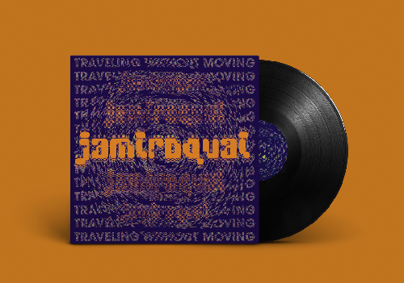
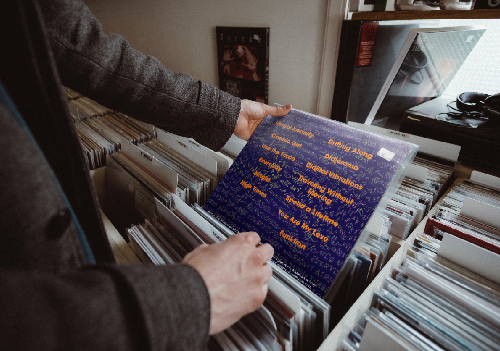
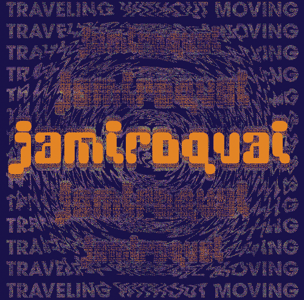
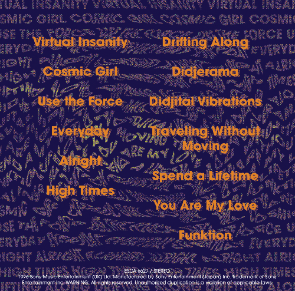
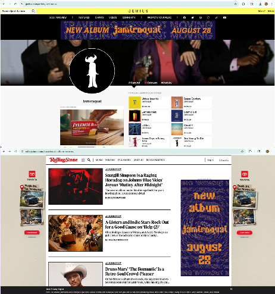
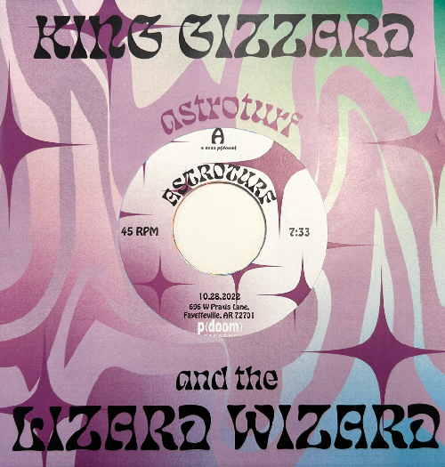
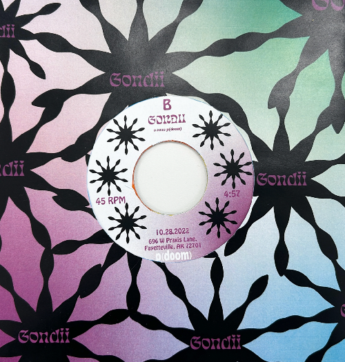
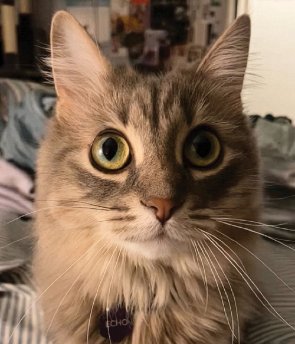

Music Design
Created for Typographic Systems II. Album cover redesign for Jamiroquai's 1996 album, Traveling Without Moving. The design is created using only type, with texture and color to enhance it. I also made two promotional banner ads to go along with it. Created in Adobe Photoshop.





Created for Design Tools and Concepts. A 7" record cover and label for two songs, Astroturf and Gondii by King Gizzard and the Lizard Wizard. I wanted to communicate their psychedelic-jam sounds through gradients and distorted vectors. Cover/Label created in Illustrator. Animation created in After Effects.


this project is not real

Copyright © 2026 Garrison Brister